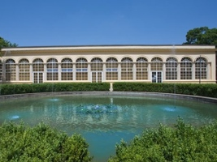
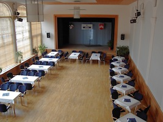
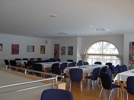
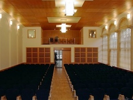
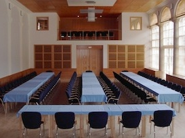

Zámecký skleník je reprezentativní budova, nacházející se poblíž boskovického zámku na ulici Hradní. Hodí se na pořádání koncertů, divadelních představení, konferencí a oslav; podle uspořádání pojme zhruba 60–240 lidí.
Fotogalerie

Průčelí Skleníku

Stolová úprava sálu, 120 míst

Stolová úprava sálu, 120 míst

Stolová úprava galerie, 66 míst

Divadelní úprava, kapacita 224 míst sál + 16 galerie

Konferenční úprava, kapacita 120 míst sál + 16 galerie
Umístění
Ceník
|
delší pronájem (svatební hostiny, plesy, firemní akce, …) |
10 000 Kč |
| krátkodobý pronájem | 1500 Kč za hodinu |
| využití pódia | 200 Kč za hodinu |
| pronájem zařízení pro velkoplošnou projekci | 400 Kč za hodinu |
|
příjezd vozidlem do areálu (první dvě vozidla jsou zdarma) |
500 Kč na vozidlo |
| překročení smluveného času | 1000 Kč za hodinu |
| propagace akcí konaných v našich prostorách (web KZMB, výlep plakátů na našich plochách, letáčky, …) |
1000 Kč |
|
připojení k WiFi (heslo u správce budovy) |
zdarma |
Ceny jsou bez 21 % DPH. Nájemci z řad OS, stran, spolků, dobrovolných aktivit a charitativních organizací mají slevu 25 %. Pokud máte zájem, vyplňte prosím objednávkový formulář a pošlete jej na adresy ředitele a účetní, případně jej přineste osobně do kanceláře ředitele KZMB. Nájemce odpovídá za všechny škody vzniklé v důsledku konání akce, je povinen prostory řádně převzít a po ukončení akce předat.
TIP Aktuální obsazenost Skleníku si můžete zjistit v online kalendáři.